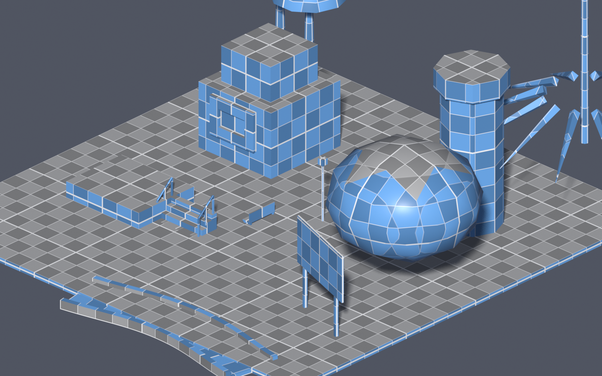
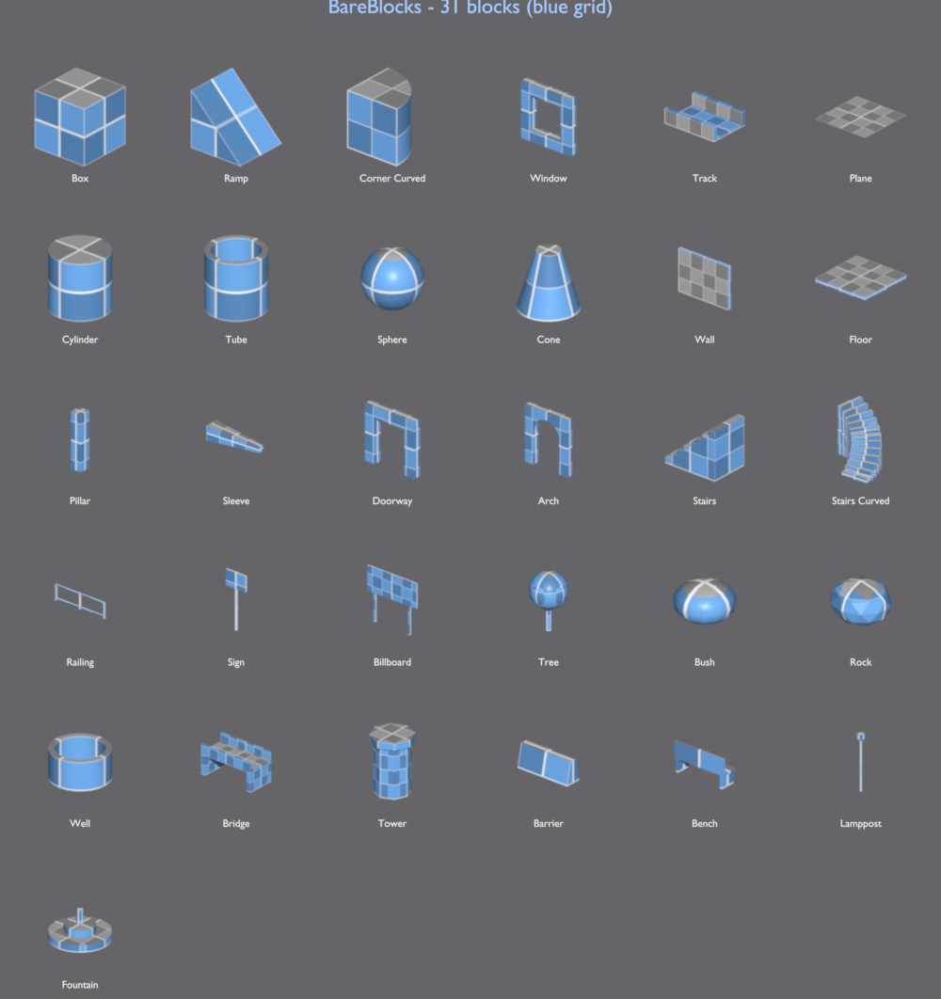
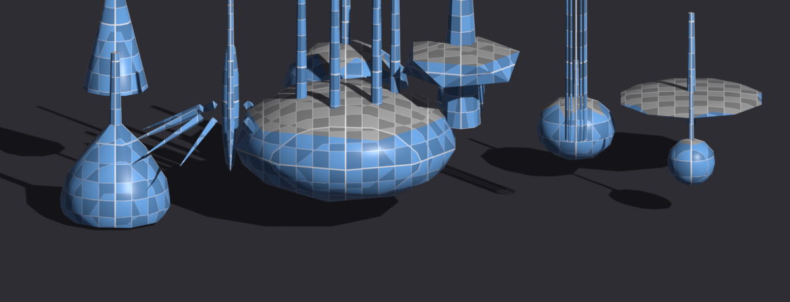

A parametric greyboxing kit for Blender. Drop in live primitives, bend roads and walls along splines, and let an AI assemble whole scenes — every piece stays editable.
// GPL-3.0 · Geometry Nodes · no dependencies · tested on Blender 5.1

Drop blocks, drag a gizmo to resize, bend a road along a spline, and let the AI fill in the rest.
Everything is driven by Geometry Nodes, so nothing is ever baked. Resize, re-route, recolor and rebuild as the design changes.
Every block is live Geometry Nodes — size, taper, steps, radius and more stay editable forever.
A triplanar grid + checker locks to each block, with minor and major lines that read as real measurements.
Track, Wall, Railing and Curved Stairs follow an editable spline — bend the path for smooth curves or sharp corners.
Describe a scene; the agent proposes an editable checklist, you approve, and it builds with the blocks — using your OpenAI key.
BareBlocks mode adds resize handles with live cm/m readouts and grid snapping, next to Blender's transform gizmos.
Illustrator-style align/distribute in the view plane, plus reusable block bundles and an asset library.
Click a thumbnail to drop a block, then dial it in from the panel. From boxes and ramps to doorways, spiral stairs, signage and street props.

One procedural tree generator drives twelve species presets — pine, palm, oak, willow, cypress, banyan and more. Swap canopy shape, height, multi-trunk and droop.

No other blockout kit does this. An agent that uses the blocks as its tools — it plans the layout, then constructs it, while you stay in control.
* planning layout, keeping pieces on the ground… [✓] added BB_Track [✓] shaped path · 6 points [✓] added BB_Billboard * placing pines along the inner edge… [✓] added BB_Pine ×6
A single Blender extension — download the .zip, install from disk, and enable. Built for Blender 4.2+ and tested on 5.1.
GPL-3.0 licensed: read the code, fork it, ship your own blocks. The whole kit — every block type, the AI assistant, gizmos and bundles — at no cost.